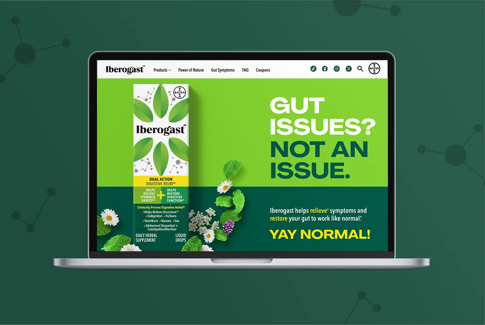
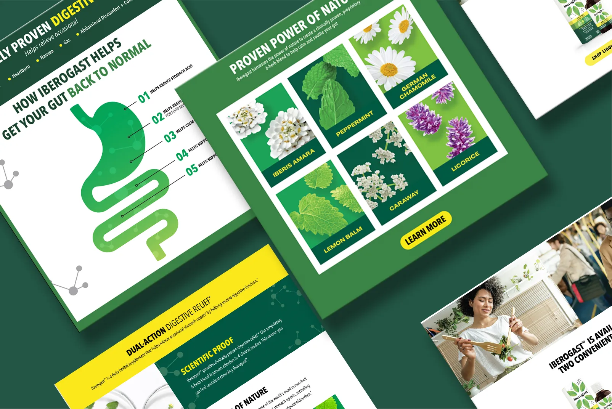
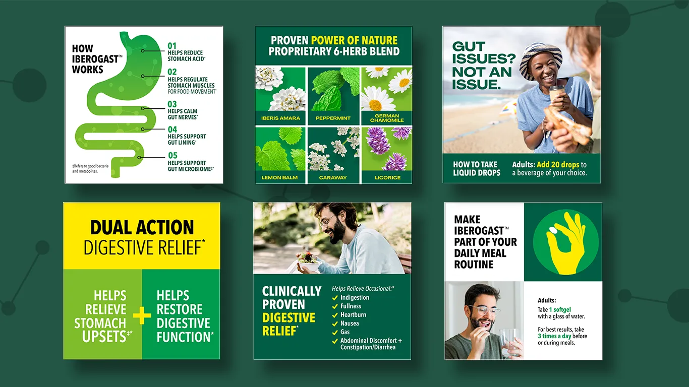
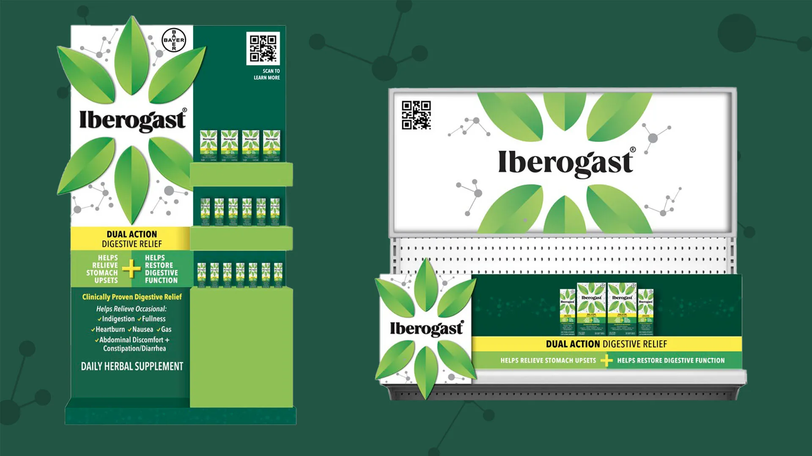

Brand identity, website, ecommerce, and retail display design for a new digestive supplement entering the U.S. market.
I led the design of Iberogast's U.S. market entry across every consumer touchpoint — brand identity, responsive website, ecommerce content, and in-store retail displays. Built a cohesive visual system that translated a European heritage brand for American retail shelves and digital storefronts.

Iberogast is a well-established digestive supplement in Europe, but it had no consumer presence in the United States. The challenge was to introduce the brand to American consumers across multiple surfaces simultaneously — a responsive website, Amazon and retailer ecommerce listings, and physical retail displays — all while maintaining the credibility of its European heritage.
The brand needed to feel trustworthy and clinical enough for the digestive health category, but warm and approachable enough to stand out against established U.S. competitors at shelf and online. Every touchpoint had to work together as a single coherent system from the first day of launch.
I started with the brand identity — establishing a visual language that could flex across digital and physical environments. The color palette, typography, and image style were developed as a system, not a one-off, so that every asset from web banners to shelf talkers would feel unmistakably Iberogast.
For the website, I designed a responsive experience that communicated the product's story, ingredients, and clinical heritage while driving conversion. The ecommerce content followed the same visual system, adapted for the constraints of Amazon and retailer platforms. Finally, I designed retail display units that translated the digital brand into a physical presence — ensuring the brand looked consistent whether a consumer encountered it on their phone or in the aisle.
Designed and developed the Iberogast consumer website — a responsive experience that communicates the product's story, ingredient heritage, and clinical credibility while guiding visitors toward purchase.

The responsive design ensures the full brand story translates to mobile — clear hierarchy, fast load times, and conversion-focused layouts optimized for how consumers actually discover health products on their phones.

Ecommerce content designed for Amazon and retailer platforms — product detail pages, A+ content, and brand store assets that maintain visual consistency with the website while working within each platform's constraints.

In-store visual merchandising designed to establish Iberogast's shelf presence from day one. The retail display translates the digital brand into a physical environment — consistent color, typography, and messaging that makes the product recognizable whether a consumer first sees it online or in the aisle.

Iberogast launched in the U.S. market with a cohesive brand presence across digital and physical retail. The visual system I built ensured consistency from the website to Amazon to in-store displays — giving the brand a unified identity from its first day on American shelves. The modular design system continues to scale as the brand expands into new retailers and platforms.
Lead designer and brand strategist for the Iberogast U.S. launch. Responsible for brand identity, responsive website design and development, ecommerce content across Amazon and retailer platforms, and retail display design. Worked closely with marketing teams to ensure the brand's vision and clinical heritage were consistently communicated across all consumer touchpoints.